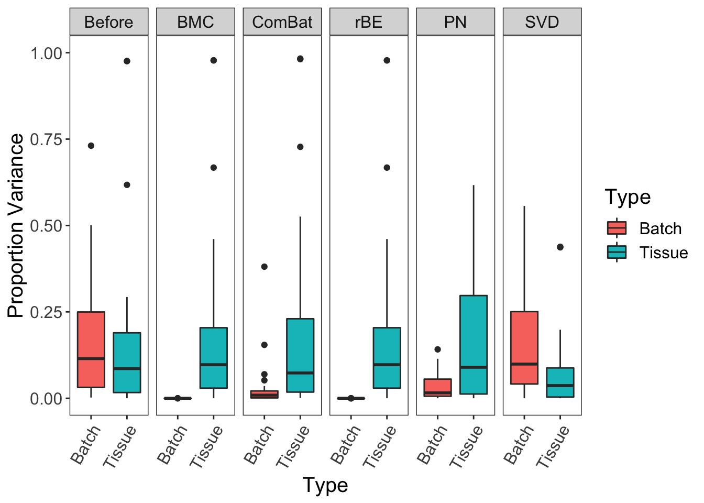
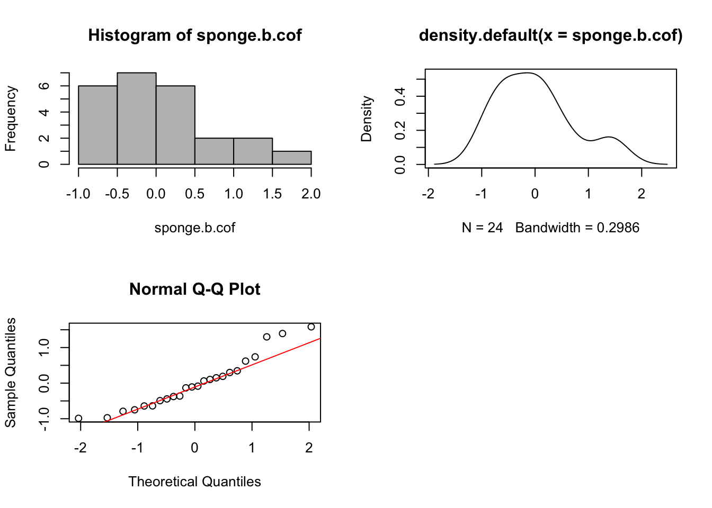

Chapter 5 Simulations of systematic and non-systematic batch effects
5.1 Mean=5,unequal variance
‘Systematic’ refers to homogeneous change amongst all microbial variables (OTUs) due to having the same source of variation. We illustrate this concept in a linear model framework where batch and treatment regression coefficients are estimated simultaneously on each OTU. For a given batch effect and a given OTU, we can formulate the systematic assumption as:
\[\beta_{j} \sim N(\mu,\sigma^{2})\]
where \(\beta_{j}\) is the batch regression coefficient of OTU\(_{j}\) (\(j = 1,...,p\)). Here we consider the simplest case of a linear model with one batch predictor, but this formulation could be extended to a model with multiple batch predictors where the batch regression coefficients can represent more than two batch levels. In a univariate model that tests each OTU idividually, then the distribution of the batch coefficients of all OTUs is Gaussian with a mean \(\mu\), and standard deviation \(\sigma\). This indicates that the batch effect has a similar, though not necessarily identical, influence on all OTUs.
To illustrate the type of batch effects, we simulated a set of data with 50 samples and 10,000 OTUs each, based on the simulation approach from (Gagnon-Bartsch, Jacob, and Speed 2013).
The dataset with a systematic batch effect:
- \(\beta_{j} \sim N(5,1^{2})\) for \(j=1,...,p\) OTUs;
- \(\sigma_{j} \sim N(0,2^{2})\) for \(j=1,...,p\) OTUs; This variance per OTU is aimed to simulate data as realistically as possible.
- \(\beta_{ij} \sim N(\beta_{j}, \sigma_{j}^{2})\) for \(i = 1,...,n\) samples.
# Create the simulated data
m <- 50
n <- 10000
nc <- 1000 # negative controls without treatment effects
p <- 1
k <- 1
ctl <- rep(FALSE, n)
ctl[1:nc] <- TRUE
# treatment effect
X <- matrix(c(rep(0, floor(m/2)), rep(1, ceiling(m/2))), m, p)
beta <- matrix(rnorm(p*n, 5, 1), p, n) #treatment coefficients
beta[ ,ctl] <- 0
# batch effect
W <- as.matrix(rep(0, m), m, k)
W[c(1:12,38:50),1] <- 1
alpha <- matrix(rnorm(k*n, 5, 1), k, n)
Y_alpha <- sapply(alpha, function(alpha){rnorm(m, mean = alpha,
abs(rnorm(1, mean = 0, sd = 2)))})
YY_alpha <- apply(Y_alpha, 2, function(x){x*W})
epsilon <- matrix(rnorm(m*n, 0, 1), m, n)
Y <- X%*%beta + YY_alpha + epsilon
# estimate batch coefficient for each OTU
w.cof <- c()
for(i in 1:ncol(Y)){
res <- lm(Y[ ,i] ~ X + W)
sum.res <- summary(res)
w.cof[i] <- sum.res$coefficients[3,1]
}
par(mfrow = c(2,2))
hist(w.cof,col = 'gray')
plot(density(w.cof))
qqnorm(w.cof)
qqline(w.cof, col = 'red')
par(mfrow = c(1,1))
The histogram and density plots are plotted using estimated batch regression coefficients \(\hat{\beta}_{j}\) for each OTU \(j\).
5.2 Mean=0&5,unequal variance
Non-systematic batch effects have a heterogeneous influence on microbial variables. Using a linear model framework, as described previously, we can formulate this non-systematic assumption as:
\[ \beta'_{j} \sim \begin{cases} N(0,\delta^{2}) & \text{for OTUs with no batch effect,} \\ N(\mu,\sigma^{2}) & \text{for OTUs with batch effect.} \end{cases} \]
Therefore, the batch regression coefficients \(\beta'_{j}\) may follow skewed distributions with several modes.
The dataset with non-systematic batch effect:
- \(\beta'_{t} \sim N(0,1^{2})\) and \(\beta'_{k} \sim N(5,1^{2})\) for \(t=1,...,T\) OTUs, \(k=1,...,K\) OTUs and \(T=\frac{3}{4}p\), \(K=\frac{1}{4}p\);
- \(\sigma'_{j} \sim N(0,2^{2})\) for \(j=1,...,p\) OTUs;
- \(\beta'_{ij} \sim N(\beta'_{j}, \sigma_{j}^{'2})\) for \(i = 1,...,n\) samples.
# Create the simulated data
m <- 50
n <- 10000
nc <- 1000 # negative controls without treatment effects
p <- 1
k <- 1
ctl <- rep(FALSE, n)
ctl[1:nc] <- TRUE
# treatment effect
X <- matrix(c(rep(0, floor(m/2)), rep(1, ceiling(m/2))), m, p)
beta <- matrix(rnorm(p*n, 5, 1), p, n) #treatment coefficients
beta[ ,ctl] <- 0
# batch effect
W <- as.matrix(rep(0, m), m, k)
W[c(1:12,38:50),1] <- 1
alpha2 <- matrix(sample(c(rnorm(k*(3*n/4), 0, 1),rnorm(k*(n/4), 5, 1)), n), k, n)
Y_alpha2 <- sapply(alpha2, function(alpha){rnorm(m, mean = alpha,
sd = abs(rnorm(1, mean = 0, sd = 2)))})
YY_alpha2 <- apply(Y_alpha2, 2, function(x){x*W})
epsilon <- matrix(rnorm(m*n, 0, 1), m, n)
Y2 <- X%*%beta + YY_alpha2 + epsilon
w.cof2 <- c()
for(i in 1:ncol(Y2)){
res <- lm(Y2[ ,i] ~ X + W)
sum.res <- summary(res)
w.cof2[i] <- sum.res$coefficients[3,1]
}
par(mfrow = c(2,2))
hist(w.cof2, col = 'gray')
plot(density(w.cof2))
qqnorm(w.cof2)
qqline(w.cof2, col = 'red')
par(mfrow = c(1,1))
The histogram and density plots are plotted using estimated batch regression coefficients \(\hat{\beta}_{j}\) for each OTU \(j\), showing a bi-modal distribution.
We observed similar patterns in our real case studies, suggesting that the batch effects are mixed with multiple sources and are non-systematic.
5.3 Sponge data
sponge.b.cof <- c()
for(i in 1:ncol(sponge.tss.clr)){
res <- lm(sponge.tss.clr[ ,i] ~ sponge.trt + sponge.batch)
sum.res <- summary(res)
sponge.b.cof[i] <- sum.res$coefficients[3,1]
}
par(mfrow = c(2,2))
hist(sponge.b.cof,col = 'gray')
plot(density(sponge.b.cof))
qqnorm(sponge.b.cof)
qqline(sponge.b.cof, col='red')
par(mfrow = c(1,1))
5.4 AD data
ad.b.cof <- c()
ad.batch.relevel <- relevel(ad.batch, '01/07/2016')
for(i in 1:ncol(ad.tss.clr)){
res <- lm(ad.tss.clr[,i] ~ ad.trt + ad.batch.relevel)
sum.res <- summary(res)
ad.b.cof[i] <- sum.res$coefficients[4,1]
}
par(mfrow = c(2,2))
hist(ad.b.cof,col = 'gray')
plot(density(ad.b.cof))
qqnorm(ad.b.cof)
qqline(ad.b.cof, col='red')
par(mfrow = c(1,1))
Bibliography
Gagnon-Bartsch, Johann A, Laurent Jacob, and Terence P Speed. 2013. “Removing Unwanted Variation from High Dimensional Data with Negative Controls.” Berkeley: Tech Reports from Dep Stat Univ California. Citeseer, 1–112.